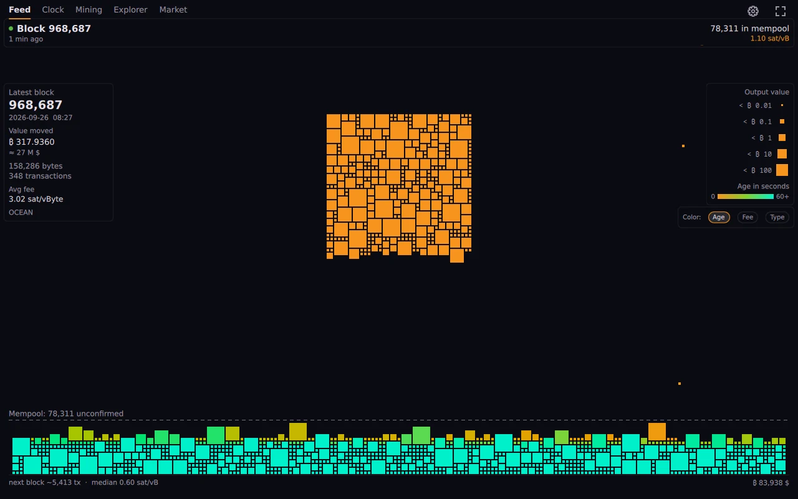
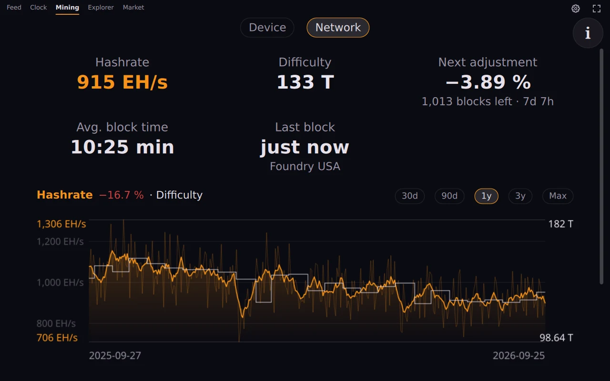
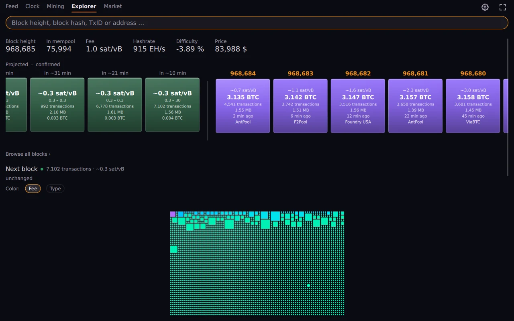
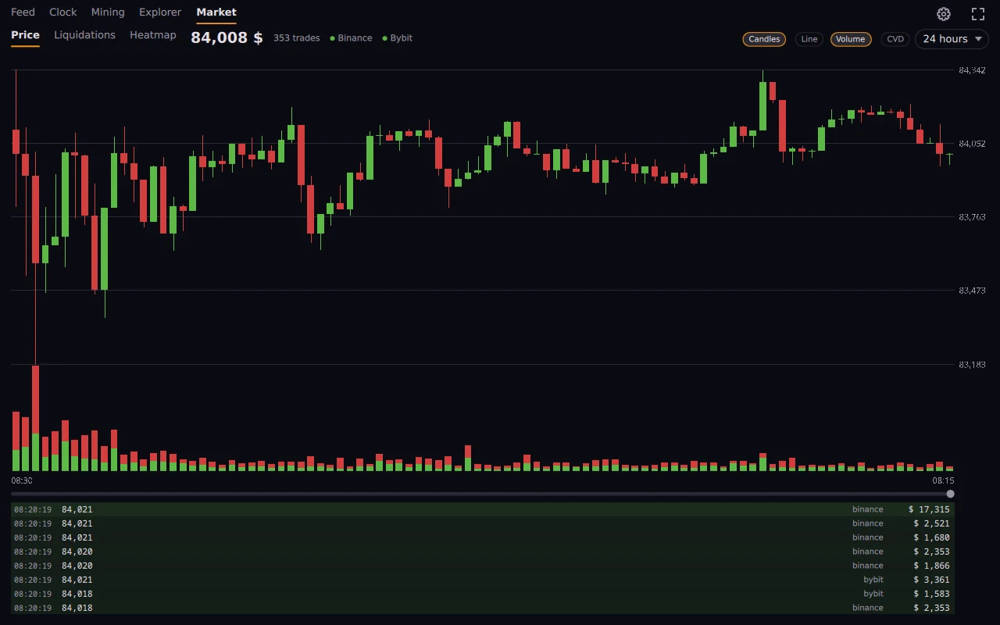

Ожидающие транзакции падают в кучу мозаикой из плиток. Размер плитки зависит от того, сколько она переводит, а цвет показывает возраст, комиссию или тип. Подтверждённые улетают в блок. Видно, как дышит сеть.
Версия 0.2.13 от 2026-09-25 · Что нового

OrangeDeck служит визуализатором мемпула биткоина. Он рисует мемпул таким, каким тот ведёт себя на деле: каждая ожидающая транзакция изображена квадратом. Квадраты копятся, попадают в блок, вытесняются замещающими транзакциями, и вы видите всё это своими глазами, а не читаете цифру.
Рядом с ним ещё пять видов: часы высоты блока для планшета на стене, данные майнинга с вашего Bitaxe и по всей сети, обозреватель блоков, вкладка рынка со свечами, кумулятивной дельтой объёма и ликвидациями, а также адреса только для наблюдения.




Нет. Он ничего не умеет подписывать. Отслеживаемые адреса вводятся как адреса или xpub и покидают ваш компьютер только в виде запроса баланса.
По умолчанию с mempool.space или с вашего собственного экземпляра mempool. Это одна настройка. Рыночные данные приходят из публичных потоков бирж.
Нет. Нашего сервера нет, аналитики и отчётов о сбоях тоже.
Ничего. Лицензия MIT, платной версии нет.
На тринадцати: английском, немецком, испанском, французском, итальянском, португальском (Португалия и Бразилия), нидерландском, русском, японском, китайском, польском и чешском. Он запускается на языке системы, а числа и даты оформляются по языку, выбранному в настройках.
Нет, и об этом сказано на экране. Чужие позиции никто не публикует; это модель, и её допущения расписаны.
Для этого и сделан вид «Часы»: крупные цифры, никаких элементов управления. В сборке для Android есть ярлык, который открывает его сразу.
{kind=link}
{kind=link}
{kind=link}